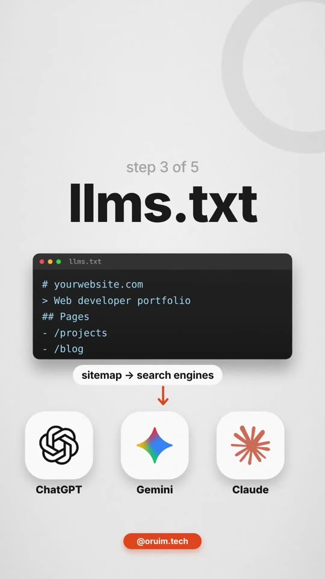
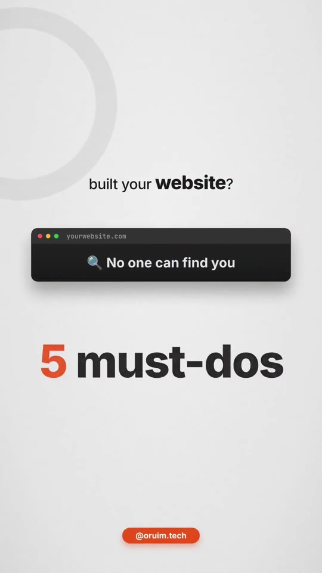
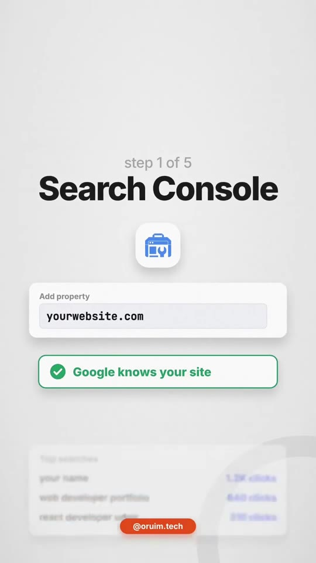
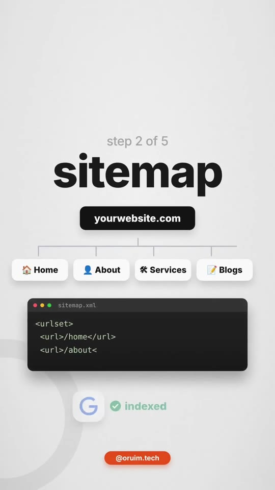
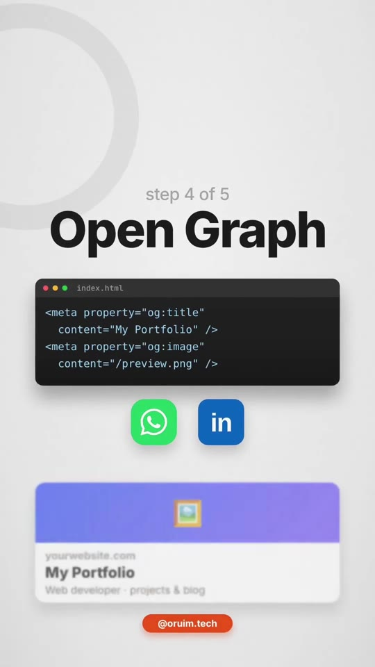
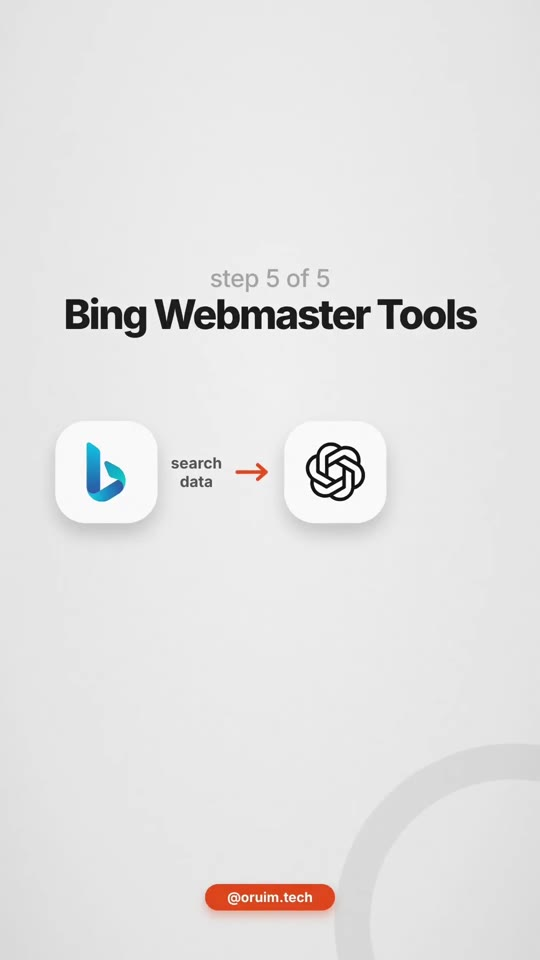

Marketing · Technical-SEO
5 Critical Post-Launch Indexing Steps: Search Console, Sitemaps, llms.txt, Open Graph & Bing
A 5-point post-launch technical checklist ensuring new web applications and marketing sites get indexed across both legacy search engines (Google, Bing) and next-generation conversational AI crawlers (ChatGPT Search, Google Gemini, Claude). Covers domain verification, XML sitemap generation, structured llms.txt documentation, Open Graph social share cards, and Bing Webmaster Tools grounding.

Steps / Workflow
- Verify Domain in Google Search Console:
- Add your property (
https://yourwebsite.com) via DNS TXT record or HTML meta tag. - Notifies Googlebot that the domain exists and unlocks search analytics (impressions, query clicks, average rankings, crawl errors).
- Add your property (
- Generate & Submit an XML Sitemap (
sitemap.xml):- Produce an automated route manifest containing all canonical URLs (
/,/about,/services,/blog). - Submit the sitemap endpoint (
yourwebsite.com/sitemap.xml) directly inside Google Search Console to guarantee full crawler coverage.
- Produce an automated route manifest containing all canonical URLs (
- Add an
llms.txtFile for Generative AI Models:- Just as search engine spiders parse XML sitemaps, frontier AI agents (ChatGPT, Gemini, Claude) ingest
/llms.txtmarkdown summaries. - Provide a clean, plain-text summary of your company, core features, documentation links, and APIs to enable accurate citations in AI search overviews.
- Just as search engine spiders parse XML sitemaps, frontier AI agents (ChatGPT, Gemini, Claude) ingest
- Implement Open Graph Meta Tags (Social Previews):
- Include standard
og:title,og:description,og:image, andog:urltags in your<head>. - Ensures links shared on WhatsApp, LinkedIn, Slack, and X render a polished preview card with branded thumbnail artwork instead of an unformatted text URL.
- Include standard
- Submit to Bing Webmaster Tools:
- Register the website inside Microsoft Bing Webmaster Tools (can import directly from Google Search Console).
- Critical AI benefit: OpenAI ChatGPT Search, Microsoft Copilot, and numerous third-party RAG pipelines rely directly on Bing's search index for live web data retrieval.
Checklist Walkthrough





Verbatim Breakdown
| Timestamp | Screen / Source | Verbatim Content |
|---|---|---|
00:00 |
On-screen card | built your website? × No one can find you 5 must-dos • 1 2 3 4 5 • nobody finds it 🤔 |
00:06 |
On-screen card | step 1 of 5 • Search Console Add property: yourwebsite.com ✅ Google knows your site Top searches: your name (1.2K clicks), web developer portfolio (840 clicks), react developer (310 clicks) |
00:17 |
On-screen card | step 2 of 5 • sitemap yourwebsite.com → Home, About, Services, Blogs <urlset> <url>/home</url> ... → Google ✅ indexed |
00:31 |
On-screen card | step 3 of 5 • llms.txt # yourwebsite.com > Web developer portfolio sitemap → search engines llms.txt → ChatGPT, Gemini, Claude |
00:44 |
On-screen card | step 4 of 5 • Open Graph <meta property="og:title" content="My Portfolio" /> <meta property="og:image" content="/preview.png" /> WhatsApp, LinkedIn → rich card (not a plain link ×) |
00:56 |
On-screen card | step 5 of 5 • Bing Webmaster Tools Bing search data → ChatGPT Add your site: yourwebsite.com → Add site → ✅ site added |
(caption) |
Post Caption | Follow @oruim.tech Built a website? Do these 5 things or nobody will find it 👇 1️⃣ Add it to Google Search Console 2️⃣ Create a sitemap 3️⃣ Add an llms.txt file, so ChatGPT, Gemini and Claude know what your site is about 4️⃣ Add Open Graph tags, so your link shows a proper preview on WhatsApp and LinkedIn 5️⃣ Add it to Bing Webmaster Tools too Save this for your next launch 📌 Follow @oruim.tech for practical tech tips every day. #website #webdevelopment #seo #googlesearchconsole #sitemap |
File Templates
Open Graph Meta Tags Boilerplate
<meta property="og:type" content="website">
<meta property="og:url" content="https://yourwebsite.com/">
<meta property="og:title" content="Your Project Title">
<meta property="og:description" content="Clear concise value proposition under 160 characters.">
<meta property="og:image" content="https://yourwebsite.com/og-image.png">
<meta property="og:image:width" content="1200">
<meta property="og:image:height" content="630">llms.txt Specification Template
# Your Brand / Product Name
> One line summary describing what this application or company does.
## Core Pages
- [Home](https://yourwebsite.com/): Product overview and primary landing page.
- [Docs](https://yourwebsite.com/docs): Developer documentation and API specifications.
- [Pricing](https://yourwebsite.com/pricing): Pricing plans and tier breakdown.Try This
- Create a minimal
llms.txtmarkdown file in your public root directory containing a clean description of your service and key product links. - Test your domain on OpenGraph.xyz to confirm that your 1200×630 social card renders properly without broken image links.
- Log into Bing Webmaster Tools and click “Import from Google Search Console” to sync verified domain ownership and sitemaps in under 30 seconds.
Open Questions
- Standardization of
llms.txt: While increasingly adopted across tech companies (Stripe, Anthropic docs, FastHTML), official support and crawling behavior across AI providers is still evolving compared to establishedrobots.txtand sitemap protocols.